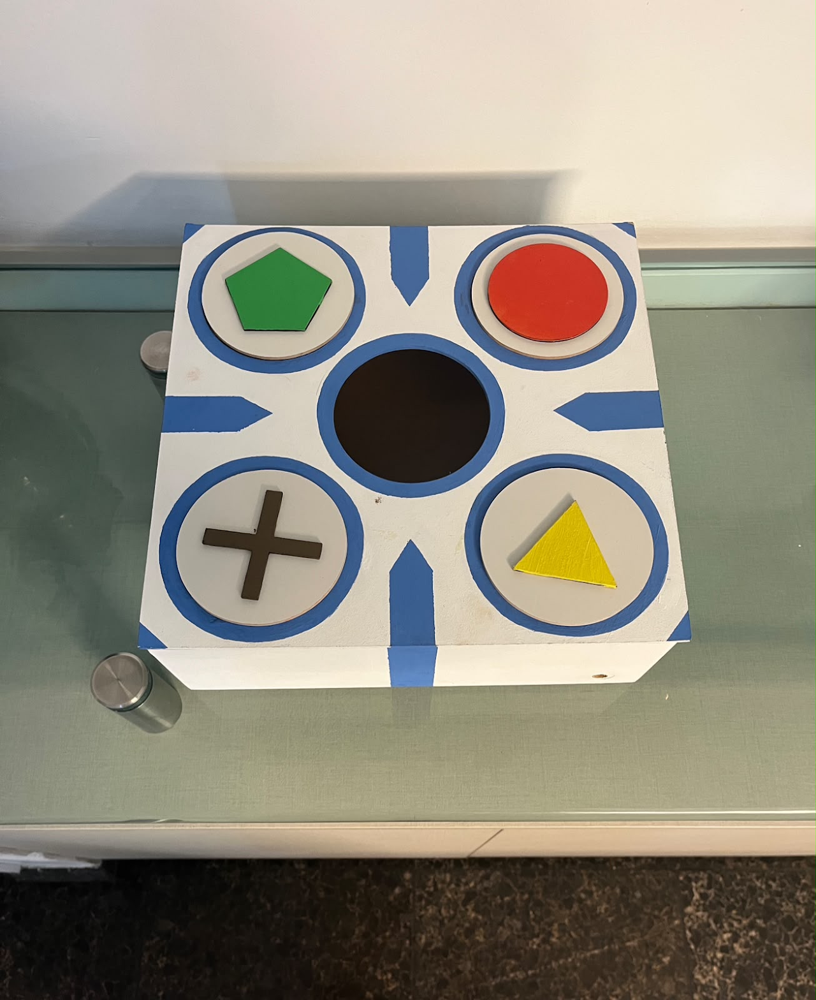
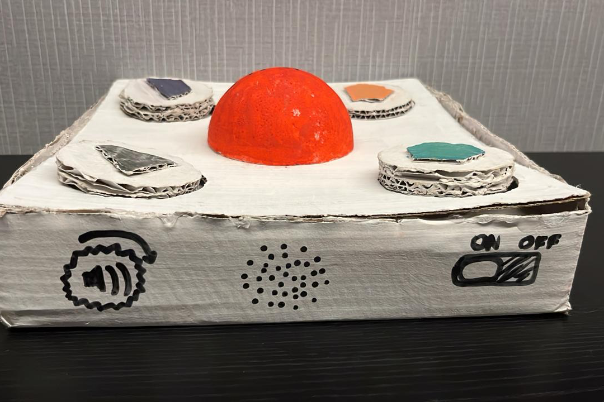
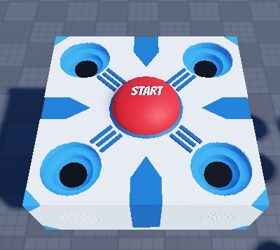
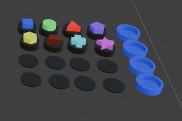
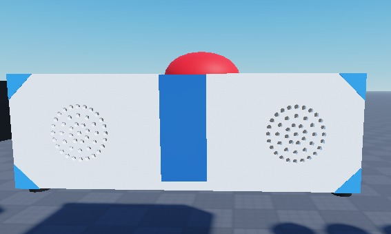

Projeto 01 — Em destaque
Ver Além do Jogo
Jogo de mesa acessível para pessoas com deficiência visual

Contexto
A acessibilidade nos jogos é fundamental para garantir que pessoas com diferentes habilidades possam jogar de forma inclusiva. Muitos jogos ainda são desenvolvidos com foco excessivo na experiência visual, o que pode limitar o acesso e o entretenimento de pessoas com deficiência visual.
Diante disso, o desafio escolhido por nossos orientadores foi a acessibilidade nos jogos voltada à acessibilidade visual. Ao longo do projeto, buscamos compreender as principais barreiras enfrentadas por esses jogadores e investigar soluções a partir do design e das ciências da computação que promovam autonomia, imersão e igualdade de experiência.
Solução desenvolvida
Um jogo de mesa físico projetado para pessoas com cegueira parcial. O artefato combina elementos táteis, visuais de alto contraste e retorno sonoro (instruções dubladas) para apoiar diferentes graus de visão residual.
Equipe e metodologia
O projeto foi conduzido por uma equipe multidisciplinar composta por estudantes de Ciência da Computação e de Design da CESAR School. A condução adotou metodologias ágeis, apoiadas por plataformas como o Jira:
- Kickoff formal para alinhamento de visão, papéis e cronograma.
- Backlog estruturado no Jira, com priorização contínua de tarefas.
- Reuniões semanais de acompanhamento, revisão e replanejamento.
- Colaboração transversal entre desenvolvimento, design e pesquisa.
- Pesquisa específica sobre os textos a serem narrados no jogo (locução / dublagem).
Processo de prototipagem
A solução evoluiu em ciclos curtos, partindo de protótipos baratos para validações rápidas até chegar à versão funcional construída em madeira:
-
01
Kickoff & protótipo de baixa fidelidade
Primeiro modelo em papelão, não funcional, para validar dimensões, posicionamento de elementos e zonas de toque.
-
02
Prototipação digital (Figma + 3D)
Telas e componentes desenhados no Figma, com modelagem 3D para validar formas, alto-falantes embutidos e botões em alto-relevo.
-
03
Pesquisa de áudio e narração
Levantamento das instruções faladas, definição do roteiro de dublagem e ajustes para clareza sonora.
-
04
Protótipo funcional final
Construção em madeira pintada com botões em alto-relevo, eletrônica em Arduino e saída de áudio integrada.
Galeria do processo




Características de acessibilidade
- Formas geométricas em alto-relevo que podem ser identificadas pelo tato.
- Cores de alto contraste sobre base branca para jogadores com baixa visão.
- Setas direcionais apontando para o centro, oferecendo orientação espacial clara.
- Disposição simétrica dos botões, facilitando a memorização das posições.
- Áudio integrado: alto-falantes embutidos para instruções e feedback narrados.
- Eletrônica embarcada em Arduino para reagir às ações dos jogadores.
Tecnologias e áreas envolvidas
Aprendizados
O projeto reforçou a importância de pensar a tecnologia a partir das pessoas e mostrou como decisões aparentemente simples — uma textura, um contraste, uma seta — podem transformar a experiência de quem joga. Foi também a primeira oportunidade de programar microcontroladores, trabalhar com uma equipe multidisciplinar ágil e ver um produto evoluir desde o papelão até o protótipo final.